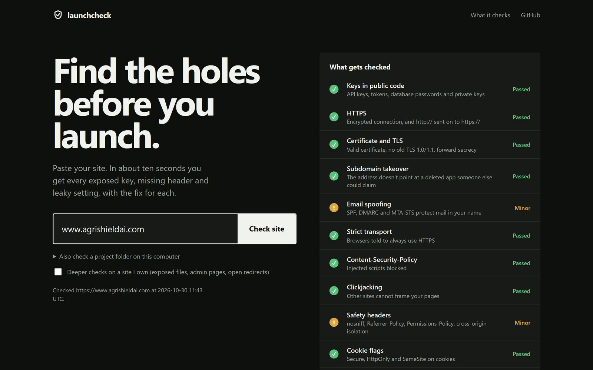
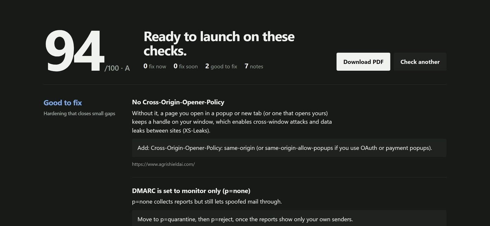

A free security check for sites and projects built fast, with AI tools, templates or no-code backends. Paste your site and get every exposed key, missing header and leaky setting, in plain English, with the fix for each.

The checklist fills in live while it checks. Here: agrishieldai.com.
Every finding says what is wrong, why it matters and exactly what to change. One click saves it as a PDF to send to whoever builds the site.

Only what a normal visitor's browser receives, public DNS records and an ordinary encrypted connection. Every check is legal to run on any site.
About 25 kinds: OpenAI, Anthropic, AWS, Stripe, GitHub, Supabase service keys, database passwords. Always masked in the output.
OpenAI, Anthropic, Google or Groq called straight from browser code, which means anyone can copy the key.
Certificate valid and not expiring, old TLS 1.0/1.1, ciphers without forward secrecy, HTTPS redirect, HSTS.
SPF, DMARC and MTA-STS: can anyone send email pretending to be you?
An address still pointing at a deleted GitHub Pages, Heroku, S3, Netlify or Vercel app that a stranger could claim.
Content-Security-Policy, clickjacking, cross-origin isolation, cookie flags, CORS, old JavaScript libraries with known holes, forms over HTTP.
Keys in files git would commit, and keys deleted from the code but still in git history.
Python, JavaScript, Rust, Go, Ruby and PHP lock files checked against the free OSV database.
SQL injection patterns, eval, shell commands, Docker as root, risky GitHub Actions, open Firebase rules, Supabase tables without Row Level Security.
Exposed .git and .env files, backups, folder listings, open redirects. Only after you prove the site is yours with a DNS record or a file.
What it never does: guess passwords, send attack payloads, scan ports or load-test. A good score means these common mistakes are absent, not that an app is secure.
How accurate it is: every check has a planted example in the tests and a safe twin that must not be flagged. Each check was also run on real sites, every finding was confirmed by hand, and the false alarms that turned up were fixed. Its header results agree with Mozilla's HTTP Observatory.
It runs on your own computer, so nothing you check is sent to anyone else. Windows PowerShell:
git clone https://github.com/NiharPatel2545/launchcheck cd launchcheck py -3.12 -m venv .venv .\.venv\Scripts\python.exe -m pip install -e .
# the web page: open http://127.0.0.1:8710 .\.venv\Scripts\python.exe -m launchcheck serve # or the command line, with a PDF .\.venv\Scripts\python.exe -m launchcheck yoursite.com --pdf report.pdf